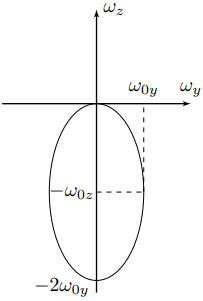
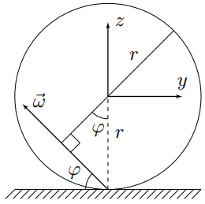
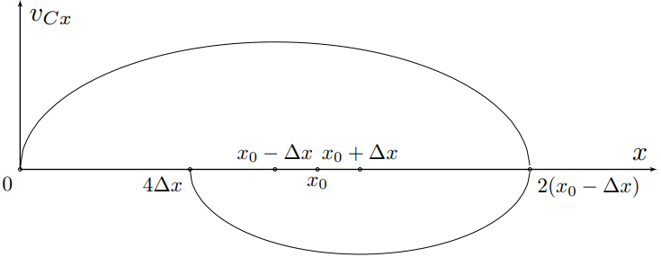
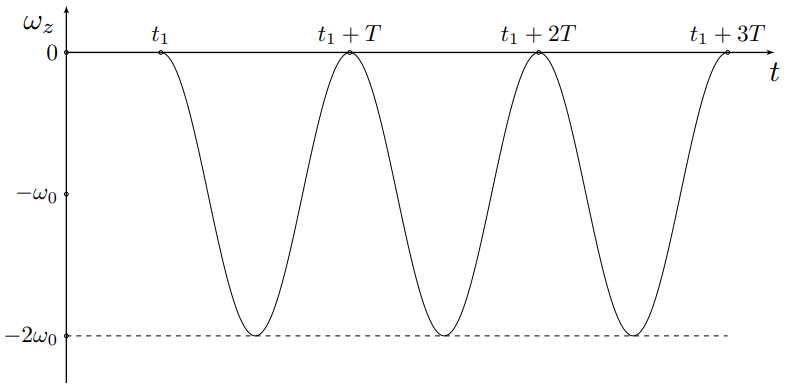
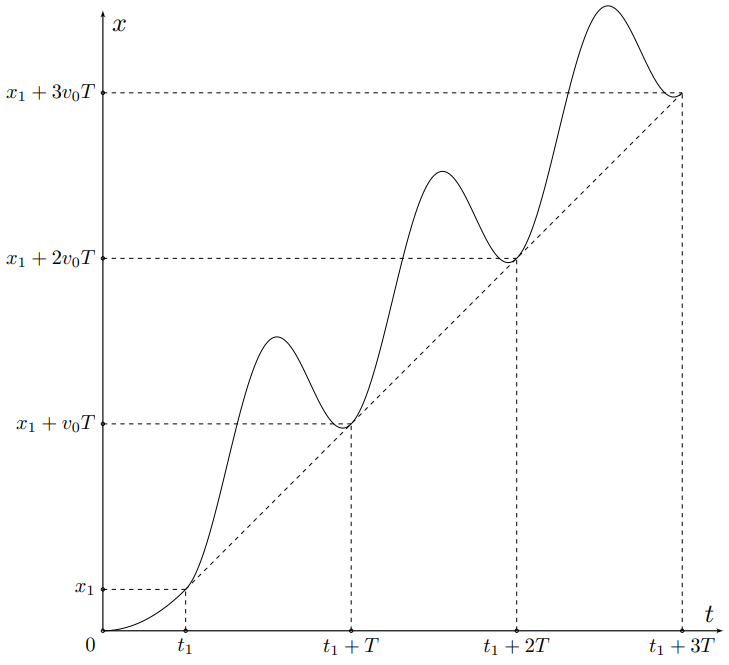

Y23 (2023) — English translation
First solution: During the rotation time $T=2\pi/\Omega$, each elementary charge passes through a point in the ring, from where: $$i=\cfrac{Q}{T} $$
Second solution: The result can also be obtained using the expression: $$i=\lambda v $$ where $v=\Omega R$ - speed of ring elements. Both expressions lead to the answer:
First solution: The magnetic moment of the system is determined by the relation: $$\vec{m}=\int \cfrac{\bigl[\vec{r}\times\vec{v}\bigr]dq}{2} $$ where $dq$ - элементарный charge, а $\vec{r}$ and $\vec{v}$ - его radius-vector and velocity соответственно. Note that angular momentum механической системы оlimitяется соratioм: $$\vec{L}=\int \bigl[\vec{r}\times\vec{v}\bigr] dM $$ where $dM $ - элементарная mass, а $\vec{r}$ and $\vec{v}$ - её radius-vector and velocity соответственно. If расlimitения chargeа and массы подобны, то мы for/atходим к следующему соотношению: $$\vec{m}=\cfrac{\vec{L}q}{2M}=\cfrac{Iq\vec{\omega}}{2M} $$ where $I=2Mr^2/5$ - moment of inertia of a homogeneous ball relative to the diameter.
$$\vec{m}=\int \cfrac{\bigl[\vec{r}\times\vec{v}\bigr]dq}{2} $$
where $dq$ is the elementary charge, and $\vec{r}$ and $\vec{v}$ are its radius vector and speed, respectively.
Note that the angular momentum of a mechanical system is determined by the relation:
$$\vec{L}=\int \bigl[\vec{r}\times\vec{v}\bigr] dM $$
where $dM$ is the elementary mass, and $\vec{r}$ and $\vec{v}$ are its radius vector and speed, respectively.
If the charge and mass distributions are similar, then we arrive at the following relationship:
$$\vec{m}=\cfrac{\vec{L}q}{2M}=\cfrac{Iq\vec{\omega}}{2M} $$
where $I=2Mr^2/5$ is the moment of inertia of a homogeneous ball relative to the diameter.
Second solution: consider a disk with radius $R$ and thickness $h$ with charge density $\rho$ and rotating with angular velocity $\vec{\omega}$ around its rotation axis. Select a ring with radius $r$ and thickness $dr$. Then for the magnetic moment of the ring we obtain: $$d\vec{m}_\text{д}=\vec{n}S\cdot\cfrac{\omega dQ}{2\pi} $$ where $S=\pi{r}^2$ - area кольца. Transforming: $$d\vec{m}_{\text{д}}=\vec{\omega}\cdot\cfrac{2\pi{r}^3drh\rho}{2}\Rightarrow{\vec{m}_\text{д}=\cfrac{\pi{R}^4h\rho\vec{\omega}}{2}} $$ Перейдём к ball/sphereу. Будем характеризовать $h$ and $R$ углом $\the ta$ с осью симметрии ball/sphereа. Then: $$R=r\sin\theta\qquad h=-r\cos\theta $$ Then for элемента магнитного momentа ball/sphereа we have: $$d\vec{m}=\cfrac{\pi{r}^5\rho\vec{\omega}}{4}\sin^5\theta d\theta\Rightarrow{\vec{m}=\cfrac{\pi{r}^5\rho\vec{\omega}}{4}\int\limits_0^{\pi}\sin^5\theta d\theta}=\cfrac{\pi{r}^5\rho\vec{\omega}}{4}\int\limits_{-1}^{1}(1-2t^2+t^4)dt=\cfrac{4\pi{r}^5\rho\vec{\omega}}{15} $$ For answerа на вопрос осталось подставить $\rho=3q/4\pi{r}^3$.
$$d\vec{m}_\text{д}=\vec{n}S\cdot\cfrac{\omega dQ}{2\pi} $$
where $S=\pi{r}^2$ is the area of the ring. Let's convert:
$$d\vec{m}_{\text{д}}=\vec{\omega}\cdot\cfrac{2\pi{r}^3drh\rho}{2}\Rightarrow{\vec{m}_\text{д}=\cfrac{\pi{R}^4h\rho\vec{\omega}}{2}} $$
Let's move on to the ball. We will characterize $h$ and $R$ by the angle $\theta$ with the symmetry axis of the ball. Then:
$$R=r\sin\theta\qquad h=-r\cos\theta $$
Then for the element of the magnetic moment of the ball we have:
$$d\vec{m}=\cfrac{\pi{r}^5\rho\vec{\omega}}{4}\sin^5\theta d\theta\Rightarrow{\vec{m}=\cfrac{\pi{r}^5\rho\vec{\omega}}{4}\int\limits_0^{\pi}\sin^5\theta d\theta}=\cfrac{\pi{r}^5\rho\vec{\omega}}{4}\int\limits_{-1}^{1}(1-2t^2+t^4)dt=\cfrac{4\pi{r}^5\rho\vec{\omega}}{15} $$
To answer the question, all that remains is to substitute $\rho=3q/4\pi{r}^3$.
Third solution: consider a thin-walled spherical shell with radius $R$ and thickness $dR$, rotating with angular velocity $\vec{\omega}$. Let us select a ring limited by the angles $\theta$ and $\theta+d\theta$ of the spherical coordinate system. The magnetic moment of the selected ring is equal to: $$d\vec{m}_\text{sф}=\cfrac{dQ\vec{\omega}}{2\pi}\cdot \pi{R}^2\sin^2\theta=\vec{\omega}\cdot\cfrac{2\pi\rho R^2dR\sin\theta d\theta}{2\pi}\cdot\pi{R}^2\sin^2\theta=\pi\rho{R}^4dR\vec{\omega}\cdot\sin^3\theta d\theta $$ Let us integrate поrayенное expression: $$\vec{m}_\text{sф}=\pi\rho{R}^4dR\vec{\omega}\int\limits_0^{\pi}\sin^3\theta d\theta=\pi\rho{R}^4dR\vec{\omega}\int\limits_{-1}^{1}(1-t^2)dt=\cfrac{4\pi\rho R^4dR\vec{\omega}}{3} $$ Магнитный moment ball/sphereа поrayается интегрированием магнитного momentа по сферам: $$\vec{m}=\cfrac{4\pi\rho\vec{\omega}}{3}\int\limits_{0}^rR^4dR=\cfrac{4\pi\rho{r}^5\vec{\omega}}{15} $$ For answerа на вопрос осталось подставить $\rho=3q/4\pi{r}^3$. Finally:
$$d\vec{m}_\text{sф}=\cfrac{dQ\vec{\omega}}{2\pi}\cdot \pi{R}^2\sin^2\theta=\vec{\omega}\cdot\cfrac{2\pi\rho R^2dR\sin\theta d\theta}{2\pi}\cdot\pi{R}^2\sin^2\theta=\pi\rho{R}^4dR\vec{\omega}\cdot\sin^3\theta d\theta $$
Let's integrate the resulting expression:
$$\vec{m}_\text{sф}=\pi\rho{R}^4dR\vec{\omega}\int\limits_0^{\pi}\sin^3\theta d\theta=\pi\rho{R}^4dR\vec{\omega}\int\limits_{-1}^{1}(1-t^2)dt=\cfrac{4\pi\rho R^4dR\vec{\omega}}{3} $$
The magnetic moment of a ball is obtained by integrating the magnetic moment over the spheres:
$$\vec{m}=\cfrac{4\pi\rho\vec{\omega}}{3}\int\limits_{0}^rR^4dR=\cfrac{4\pi\rho{r}^5\vec{\omega}}{15} $$
To answer the question, all that remains is to substitute $\rho=3q/4\pi{r}^3$.
Finally:
The moment of forces $\vec{M}$ acting on a coil with current in a uniform magnetic field is equal to: $$\vec{M}=\bigl[\vec{m}\times\vec{B}\bigr] $$from where:
If a rigid body rotates with angular velocity $\vec{\omega}$, and the speed of point $A$ is equal to $\vec{v}_A$, then the speed of point $B$ is given by the expression: $$\vec{v}_B=\vec{v}_A+\bigl[\vec{\omega}\times\overrightarrow{AB}\bigr] $$From here we obtain the condition of no slipping:
Let's project the resulting equation onto the $x$ and $y$ axes: $$v_{Cx}-\omega_yr=0\qquad v_{Cy}+\omega_xr=0 $$From here:
The vector $\vec{r}$ remains constant as the ball moves along the plane. Then differentiating, we get:
Let us write down the equation for the dynamics of rotational motion relative to the center of mass: $$\cfrac{d\vec{L}_C}{dt}=\vec{M}_C $$For momentа сил относительно центра масс we have: $$\vec{M}_C=\bigl[\vec{r}\times\vec{F}\bigr]+\cfrac{qR^2\bigl[\vec{\omega}\times\vec{B}\bigr]}{5} $$а for производной momentа momentumа по времени we have: $$\cfrac{d\vec{L}_C}{dt}=I\dot{\vec{\omega}} $$from:
Note: Take advantage of the double cross product property:
$$\bigl[\vec{a}\times\bigl[\vec{b}\times\vec{c}\bigr]\bigr]=\vec{b}\bigl({~}\vec{a}\cdot\vec{c}{~}\bigr)-\vec{c}\bigl({~}\vec{a}\cdot\vec{b}{~}\bigr)$$
Consider the vector product with $\vec{r}$ terms in the equation obtained in step $\mathrm{B3}$: from:
Since the vectors $\vec{r}$ and $\vec{e}_z$ are collinear, the equation for the dynamics of rotational motion in projection onto the $z$ axis is written as follows: $$I\dot{\omega}_z=\cfrac{qr^2\bigl[\vec{\omega}\times\vec{B}\bigr]_z}{5}=-\cfrac{qr^2B\omega_y}{5}\Rightarrow{\dot{\omega}_z=-\cfrac{qB\omega_y}{2m}} $$On the other hand, $\omega_yr=v_x$, hence: $$\dot{\omega}_z=-\cfrac{qBv_x}{2mr} $$and finally:
Let us write the theorem on the motion of the center of mass: $$m\vec{a}_C=m\vec{g}+\vec{N}+\vec{F}+q\bigl[\vec{v}_C\times\vec{B}\bigr] $$Substituting expression for $\vec{F}$, поrayенное в partе $\mathrm{B3}$, we get: $$m\vec{a}_C=m\vec{g}+\vec{N}+q\bigl[\vec{v}_C\times\vec{B}\bigr]-\cfrac{2m\vec{a}_C}{5}-\cfrac{q\vec{B}\bigl({~}\vec{r}\cdot\vec{\omega}{~}\bigr)}{5} $$hence: $$\vec{a}_C=\cfrac{5\vec{g}}{7}+\cfrac{5\vec{N}}{7m}+\cfrac{5q\bigl[\vec{v}_C\times\vec{B}\bigr]}{7m}-\cfrac{q\vec{B}\bigl({~}\vec{r}\cdot\vec{\omega}{~}\bigr)}{7m} $$Note that все силы лежат в плоскости $xz$, which means that the motion is one-dimensional, since initially the ball was motionless
Projecting the acceleration of the ball center onto the $x$ axis: $$a_{Cx}=\cfrac{5g\sin\alpha}{7}+\cfrac{qBr\omega_z}{7m} $$Substituting expression for $\omega_z$, we obtain:
Introducing the variable $x'=x-10g\sin\alpha\left(\cfrac{m}{qB}\right)^2$, we get: $$\ddot{x}'=-\left(\cfrac{qB}{m}\right)^2\cfrac{x'}{14} $$Это equation гармонических колебаний с циклической частотой $\omega_0=qB/m\sqrt{14}$. Then общее solution for $x(t)$: $$x(t)=10g\sin\alpha\left(\cfrac{m}{qB}\right)^2+A\cos(\omega_0t+\varphi_0) $$Учтём начальные условия: $$ \begin{cases} x(0)=0\\ \dot{x}(0)=0 \end{cases} \Rightarrow \begin{cases} \varphi_0=\pi\\ A=10g\sin\alpha\left(\cfrac{m}{qB}\right)^2 \end{cases} $$For for $x(t)$ we have:
The angular velocity vector of the ball always lies in the $yz$ plane. For $\omega_z$ we have: $$\omega_z(t)=-\cfrac{qBx(t)}{2mr}=-\cfrac{5mg\sin\alpha}{qBr}\left(1-\cos\left(\cfrac{qBt}{m\sqrt{14}}\right)\right) $$For $\omega_y$ we have: $$\omega_y(t)=\cfrac{v_{Cx}(t)}{r}=\cfrac{5mg\sin\alpha}{qBr}\sqrt{\cfrac{2}{7}}\sin\left(\cfrac{qBt}{m\sqrt{14}}\right) $$Hence: $$\sin^2\left(\cfrac{qBt}{m\sqrt{14}}\right)+\cos^2\left(\cfrac{qBt}{m\sqrt{14}}\right)=\left(\cfrac{\omega_y}{\cfrac{5mg\sin\alpha}{qBr}\sqrt{\cfrac{2}{7}}}\right)^2+\left(1+\cfrac{\omega_z}{\cfrac{5mg\sin\alpha}{qBr}}\right)^2=1 $$From поrayенных соотношений it can be seen that годограф vectorа угловой скорости является эллипсом с полуосями $\omega_{0z}$ and $\omega_{0y}$, equalми: $$\omega_{0z}=\cfrac{5mg\sin\alpha}{qBr}\qquad \omega_{0y}=\cfrac{5mg\sin\alpha}{qBr}\sqrt{\cfrac{2}{7}} $$

Let $\omega$ be the magnitude of the angular velocity forming an angle $\varphi$ with the plane. The maximum speed is the point whose distance to the instantaneous axis of rotation of the ball is maximum. Further, it makes sense to consider only the section lying in the $yz$ plane. The figure shows that the maximum speed of the ball element is achieved at a perpendicular to the instantaneous axis of rotation passing through the center and is equal to: $$v_{max}=\omega r(1+\cos\varphi) $$
For the angular velocity components we have: $$\omega_y=\omega\cos\varphi\qquad \omega_z=-\omega\sin\varphi $$From the equation эллипса we get: $$\cfrac{\omega^2\cos^2\varphi}{\omega^2_{0y}}+\cfrac{(\omega_{0z}-\omega\sin\varphi)^2}{\omega^2_{0z}}=1\Rightarrow{\omega=\cfrac{2\omega_{0z}\sin\varphi}{\sin^2\varphi+\cfrac{\omega^2_{0z}\cos^2\varphi}{\omega^2_{0y}}}} $$Hence for максимальной скорости we have: $$v_{max}=\cfrac{2\omega_{0z}r\sin\varphi(1+\cos\varphi)}{\sin^2\varphi+\cfrac{\omega^2_{0z}\cos^2\varphi}{\omega^2_{0y}}}=\cfrac{2\omega_{0z}r\tan\varphi(1+\sqrt{1+\tan^2\varphi})}{\tan^2\varphi+\cfrac{\omega^2_{0z}}{\omega^2_{0y}}} $$В рассматриваемый moment $\tan\varphi=\omega_{0z}/\omega_{0y}$, therefore: $$v_{max}=\omega_{0y}r\left(1+\sqrt{1+\cfrac{\omega^2_{0z}}{\omega^2_{0y}}}\right) $$Substituting $\omega_{0y}$ and $\omega_{0z}$, we find:

We have shown that the motion is one-dimensional, which means that the Lorentz force is zero at any moment. Then the normal reaction force of the plane $N$ at any moment is equal to $$N=mg\cos\alpha $$We determine силу трения $F_x$ from теоремы о движении центра масс: $$F_x=ma_{Cx}-mg\sin\alpha=mg\sin\alpha\left(\cfrac{5}{7}\cos\left(\cfrac{qBt}{m\sqrt{14}}\right)-1\right)\geq{-\cfrac{12mg\sin\alpha}{7}} $$hence friction force $F_x$ всегда находится в следующем диапазоне: $$-\cfrac{2mg\sin\alpha}{7}\geq{F_x}\geq{-\cfrac{12mg\sin\alpha}{7}} $$Минимально возможный coefficient of friction оlimitяется expressionм: $$\mu_{min}=\cfrac{|F_x|_{max}}{N} $$from:
Since during rolling there is only a redistribution of the normal reaction force, the equation of the dynamics of rotational motion relative to the center of mass remains true, and the theorem on the movement of the center of mass must be changed:
The phase diagram of each half of the oscillations is an ellipse, shifted from position $x_0$ by the amount $\pm{\Delta{x}}$, where: $$x_0=10g\sin\alpha\left(\cfrac{m}{qB}\right)^2 $$$$\Delta{x}=10g\sin\alpha\left(\cfrac{m}{qB}\right)^2\cfrac{k}{r\tan\alpha} $$
From the phase diagram it is clear that if $a_i$ is the amplitude of half of the oscillation with number $i$, then the amplitude of half of oscillation $a_{i+1}$ with number $i+1$ is determined by the expression: $$a_{i+1}=a_i-2\Delta{x} $$Taking into account expression for $a_1$: $$a_1=x_0-\Delta{x} $$we have: $$a_{i+1}=x_0-(1+2i)\Delta{x} $$Then for $S_{i{,}i+1}$ we have: $$S_{i{,}i+1}=2a_{i+1} $$or:

Rolling stops if at the stopping point $$|F_\text{кач}|\leq kmg\cos\alpha/r $$Этому соответствуют следующие координаты $x$:
Oscillations occur until the next stopping point is in the range $x_\text{оsт}\in\bigl[-\Delta{x}{;}\Delta{x}\bigr]$, which leads to the expression for the number of $N$ oscillations: $$N=\Biggl[\cfrac{a_1}{2\Delta{x}}\Biggr]+1 $$Since $\tan\alpha\gg{k/r}$, с хорошей точностью true: $$N=\cfrac{r\tan\alpha}{2k} $$For времени движение we have: $$t=\cfrac{\pi N}{\omega_0} $$or:
First solution: Let's use the law of conservation of energy: $$Q=-\Delta{W}_p-E_k $$ where $\Delta{W}_p$ - изменение potentialьной энергии системы, а $E_k$ - её kinetic energy. For $\Delta{W}_p$ we have: $$\Delta{W}_p=-mg\sin\alpha x_0=-10mg^2\sin^2\alpha\left(\cfrac{m}{qB}\right)^2 $$ For нахождения кинетической энергии we determine конечную угловую velocity верчения ball/sphereа: $$E_k=\cfrac{I\omega^2_z}{2}=\cfrac{Iq^2B^2x^2_0}{8m^2r^2}=\cfrac{q^2B^2}{20m}\cdot 100g^2\sin^2\alpha\left(\cfrac{m}{qB}\right)^4=5mg^2\sin^2\alpha\left(\cfrac{m}{qB}\right)^2 $$
$$Q=-\Delta{W}_p-E_k $$
where $\Delta{W}_p$ is the change in the potential energy of the system, and $E_k$ is its kinetic energy.
For $\Delta{W}_p$ we have:
$$\Delta{W}_p=-mg\sin\alpha x_0=-10mg^2\sin^2\alpha\left(\cfrac{m}{qB}\right)^2 $$
To find the kinetic energy, we determine the final angular velocity of the ball's rotation:
$$E_k=\cfrac{I\omega^2_z}{2}=\cfrac{Iq^2B^2x^2_0}{8m^2r^2}=\cfrac{q^2B^2}{20m}\cdot 100g^2\sin^2\alpha\left(\cfrac{m}{qB}\right)^4=5mg^2\sin^2\alpha\left(\cfrac{m}{qB}\right)^2 $$
First solution: explicitly calculate the work done by the rolling friction force. For it we have: $$A_i=-\cfrac{kN}{r}\cdot{2A_i}=-\cfrac{2kmg\cos\alpha}{r}\cdot{a_i} $$ После подстановки $a_i$ we get expression for работы: $$A=-\cfrac{20mg^2\sin\alpha\cos\alpha k}{r}\left(\cfrac{m}{qB}\right)^2\sum\limits_{i=1}^N \left(1+\cfrac{k}{r\tan\alpha}-\cfrac{2ik}{r\tan\alpha}\right)$$ Суммируя, we get: $$A=-\cfrac{20mg^2\sin\alpha\cos\alpha k}{r}\left(\cfrac{m}{qB}\right)^2\left(\left(1+\cfrac{k}{r\tan\alpha}\right)N-\cfrac{N(N+1)k}{r\tan\alpha}\right)$$ Substituting $N$ and taking into account малость, we get: $$A=-\cfrac{20mg^2\sin\alpha\cos\alpha k}{r}\left(\cfrac{m}{qB}\right)^2\left(\cfrac{r\tan\alpha}{2k}-\cfrac{r\tan\alpha}{4k}\right)=-5mg^2\sin^2\alpha\left(\cfrac{m}{qB}\right)^2 $$ Heat $Q=-A$, from which:
$$A_i=-\cfrac{kN}{r}\cdot{2A_i}=-\cfrac{2kmg\cos\alpha}{r}\cdot{a_i} $$
After substituting $a_i$ we get the expression for work:
$$A=-\cfrac{20mg^2\sin\alpha\cos\alpha k}{r}\left(\cfrac{m}{qB}\right)^2\sum\limits_{i=1}^N \left(1+\cfrac{k}{r\tan\alpha}-\cfrac{2ik}{r\tan\alpha}\right)$$
Summing up, we get:
$$A=-\cfrac{20mg^2\sin\alpha\cos\alpha k}{r}\left(\cfrac{m}{qB}\right)^2\left(\left(1+\cfrac{k}{r\tan\alpha}\right)N-\cfrac{N(N+1)k}{r\tan\alpha}\right)$$
Substituting $N$ and taking into account the smallness, we get:
$$A=-\cfrac{20mg^2\sin\alpha\cos\alpha k}{r}\left(\cfrac{m}{qB}\right)^2\left(\cfrac{r\tan\alpha}{2k}-\cfrac{r\tan\alpha}{4k}\right)=-5mg^2\sin^2\alpha\left(\cfrac{m}{qB}\right)^2 $$
The amount of heat $Q=-A$, from where:
The reaction force $N$ is uniformly distributed over the area of a circle with radius $r_0$, therefore: $$\cfrac{dN}{dS}=\cfrac{mg\cos\alpha}{\pi{r}^2_0} $$Then for momentа силы трения we have: $$dM'=\cfrac{\mu dN}{dS}\cdot{2\pi{r}dr}\cdot{r}\Rightarrow{M'=\cfrac{\mu dN}{dS}\cdot{\cfrac{2\pi{r}^3_0}{3}}} $$from:
Since the arising torque of spinning friction is directed along the $z$ axis, the expression for the friction force $\vec{F}$, and, as a consequence, the theorem on the movement of the center of mass remains true: $$a_{Cx}=\cfrac{5g\sin\alpha}{7}+\cfrac{qBr\omega_z}{7m} $$В equation динамики вращательного движения необходимо внести изменения: $$I\dot{\omega}_z=M_\text{тр}-\cfrac{qr^2B\omega_y}{5} $$where $M_\text{tr}$ - возникающий torqueы трения верчения. До тех пор, пока velocity центра ball/spherenot достигает значения $$v_0=\cfrac{2M'mr}{IqB}=\cfrac{10\mu mgr_0\cos\alpha}{3qBr} $$ball/sphere движется equalsускоренно and не вертится. Then expression for времени $t_1$ the following: $$t_1=\cfrac{7v_0}{5g\sin\alpha} $$or:
To analyze the subsequent movement, we differentiate the expression for acceleration $a_{Cx}$: $$\dot{a}_{Cx}=\ddot{v}_{Cx}=\cfrac{qBr\dot{\omega}_z}{7m}=\cfrac{qBr}{7m}\left(\cfrac{M'}{I}-\cfrac{qBv_x}{2mr}\right) $$Вводя quantity $v_1=v_{Cx}-v_0$, we get: $$\ddot{v}_1=-\left(\cfrac{qB}{m}\right)^2\cfrac{v_1}{14}\Rightarrow{v_1(t_1)=A\sin(\omega_0\tau+\varphi_0)} $$where time $\tau=t-t_1$ - time, прошедшее от momentа начала верчения. Let us use начальными условиями: $$ \begin{cases} v_1(0)=A\sin\varphi_0=0\\ \dot{v}_1(0)=\omega_0A\cos\varphi_0=\cfrac{5g\sin\alpha}{7} \end{cases} \Rightarrow v_{Cx}(\tau)=v_0+\cfrac{5g\sin\alpha\sin\omega_0\tau}{7\omega_0} $$Substituting into the equation динамики вращательного движения относительно оси $z$: $$\dot{\omega}_z=-\cfrac{qB}{2mr}\cdot{\cfrac{5g\sin\alpha\sin\omega_0\tau}{7\omega_0}}\Rightarrow{\omega_z(\tau)=-\cfrac{qB}{2mr}\cdot{\cfrac{5g\sin\alpha(1-\cos\omega_0\tau)}{7\omega^2_0}}} $$В исходных терминах: $$\omega_z(\tau)=-\cfrac{5mg\sin\alpha}{qBr}\left(1-\cos\left(\cfrac{qB\tau}{m\sqrt{14}}\right)\right) $$From the resulting expression it is clear that at the moment the spinning stops, the ball repeats it again according to the same law, since both the speed of the center and the angular speed of the spinning change with the same period. This can be interpreted as continuous spinning. Then the graph looks like the one shown in the figure below:

We have already mentioned that before the start of slipping, during time $t_1$ the ball moves uniformly accelerated and manages to cover the distance: $$x_1=\cfrac{7v^2_0}{10g\sin\alpha}=\cfrac{70\mu^2m^2gr^2_0\cos^2\alpha}{9q^2B^2r^2\sin\alpha} $$We determine зависимость $x(\tau)$: $$x(\tau)=x_1+\int\limits_0^{\tau}\left(v_0+\cfrac{5g\sin\alpha\sin\omega_0\tau}{7\omega_0}\right)d\tau=x_1+v_0\tau+\cfrac{5g\sin\alpha(1-\cos\omega_0\tau)}{7\omega^2_0} $$ Let's depict this on the graph:
